| Principais habilidades da BNCC | EF06MA16, EF06MA21, EF06MA32 |
|---|---|
| Competências | CG9, CE8 |
Neste capítulo vamos estudar como ampliar e reduzir figuras usando como apoio a malha quadriculada e, em seguida, o plano cartesiano.
Para ampliar ou reduzir uma figura é importante observar que as medidas de todos os ângulos correspondentes sejam mantidas, ou seja, que permaneçam a mesma medida, enquanto as medidas de todos os lados da figura são modificadas proporcionalmente em uma mesma razão. Por exemplo, se vamos ampliar uma figura em duas vezes, então todos os segmentos que compõem esta figura terão suas medidas multiplicadas por 2, enquanto as medidas dos ângulos correspondentes serão mantidas.
Para apoiar o estudo com ampliação e redução de figuras, os alunos irão precisar de um papel quadriculado. Solicite a eles previamente para que possam realizar alguns experimentos, antes da sistematização do conceito.
Proponha a eles que desenhem algo em um papel quadriculado, pintando quadradinhos, e após façam uma ampliação escolhendo uma grandeza de medida que pode ser definida por eles. Após a ampliação, solicite que mostrem o novo desenho ampliado e expliquem como realizaram a ampliação. Verifique se não houve algum tipo de distorção ao realizar a ampliação.
EF06MA21
CAPÍTULO 6 - Ampliação e redução de figuras
Ampliação e redução de figuras planas na malha quadriculada
Observe o desenho abaixo.
![Desenho de uma malha quadriculada de sete linhas e dez colunas. Nela o desenho de um barco formado por três figuras geométricas em três cores. Em azul o casco do barco é um trapézio com a base menor que a parte de cima. As laterais estão em diagonal inclinadas para fora. Acima do casco, à esquerda em amarelo, um triângulo com o vértice apontado para baixo e para a direita. Do lado direito do triângulo amarelo, outro triângulo. De cor verde, ele tem o vértice apontado para baixo e para a esquerda.](../../resources/images/barco.PNG) 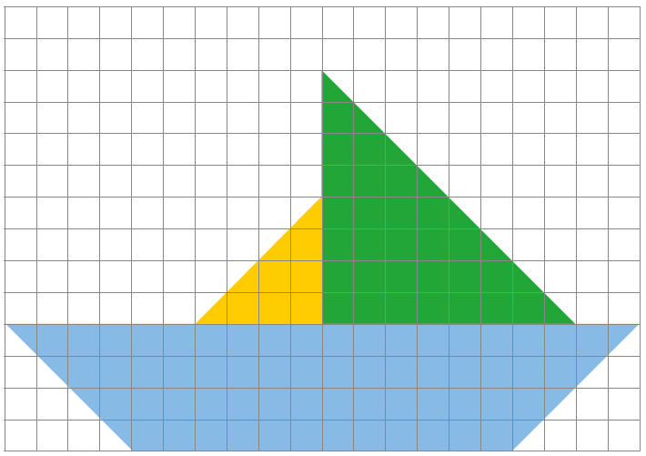
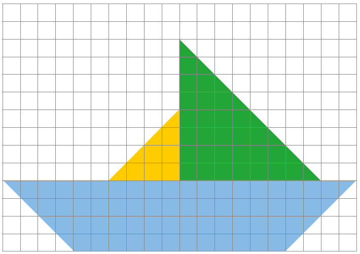
Desenho original
Um desenho como esse pode ser ampliado ou reduzido de tamanho. Para ampliarmos ou reduzirmos é importante observar que todas as medidas da figura precisam aumentar ou diminuir proporcionalmente para que a figura não seja deformada. Dessa forma, obtém-se uma figura semelhante.
Com o apoio de uma malha quadriculada, veja como podemos ampliar esse desenho.
Desenho ampliado
O desenho acima é uma ampliação do desenho anterior. Suas medidas foram multiplicadas por 2.
UNIDADE 3 - CAPÍTULO 6
122
122
Da mesma forma como foi realizada a ampliação de uma figura, solicite aos alunos que criem uma figura maior no papel quadriculado para que seja feita uma redução.
Os alunos podem criar a figura e na sequência trocar com um colega, para que este realize a redução. Para fechamento, a dupla deve apresentar o trabalho realizado, explicando como realizaram a redução.
É importante que os alunos percebam que ao realizar a ampliação proposta estamos multiplicando todas as medidas de comprimento da figura desenhada por um número natural. Já ao realizarmos a redução, estamos dividindo todas as medidas de comprimento por um número natural. Também é importante que percebam que as medidas dos ângulos permanecem constantes não havendo distorção na nova figura encontrada.
Agora, vamos verificar como podemos reduzir uma figura usando uma malha quadriculada.
Desenho original
Desenho reduzido
Para reduzirmos a figura acima em 4 vezes, vamos dividir cada uma das medidas dos lados da figura por 4. Observe:
UNIDADE 3 - CAPÍTULO 6
123
123
No exemplo do quadrado ABCD, multiplicamos todas as suas coordenadas por 2 para ampliar o quadrado. Esta é uma forma de realizarmos a ampliação deste quadrado. Note que obtivemos novas coordenadas para o quadrado EFGH, representando um novo quadrado em que seus lados tiveram as medidas duplicadas.
Mas será que seria possível ampliarmos o quadrado ABCD, mantendo um dos seus vértices fixos? Certamente que sim.
Solicite aos alunos que façam esta ampliação mantendo fixo o ponto D que corresponde a um dos vértices do quadrado. Neste caso, não podemos simplesmente multiplicar por 2 cada uma das coordenadas dos demais vértices. Então quais seriam as novas coordenadas dos novos vértices?
Proponha este desafio aos alunos para que realizem em duplas. Usando uma malha quadriculada, construam um plano cartesiano e:
► Manter as coordenadas do ponto D(3, 3);
► Ampliar o quadrado original, sendo que as medidas de comprimento do novo quadrado terão seus lados medindo o dobro da medida original.
► Construir um novo quadrado EFHG indicando as coordenadas dos seus vértices.
Observe que mantendo-se as coordenadas do ponto D(3, 3) que passará a ser o novo ponto H(3, 3), teremos a seguinte representação do quadrado EFGH no plano cartesiano:
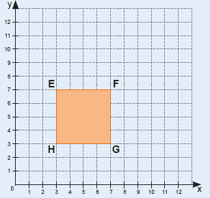
EF06MA16
EF06MA21
Ampliação e redução de figuras planas no plano cartesiano
Podemos construir uma figura plana no plano cartesiano indicando as coordenadas dos seus vértices. Observe o quadrado abaixo de coordenadas A(3, 5), B(5, 5), C(5, 3) e D(3, 3).
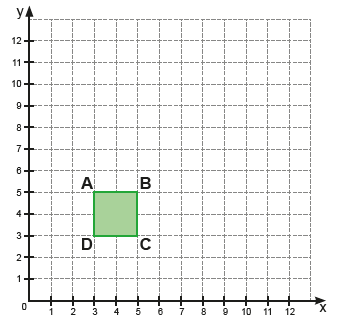Para ampliarmos esse quadrado, basta multiplicarmos suas coordenadas por um mesmo número, sendo este número maior que 1.
Vamos ampliar o quadrado acima multiplicando todas as suas coordenadas por 2. Assim, teremos um novo quadrado ampliado de coordenadas E(6, 11), F(10, 11), G(10, 7) e H(6, 7).
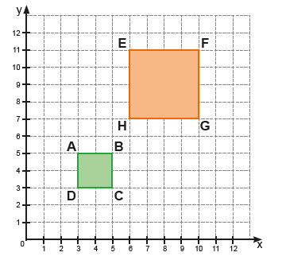Assim como podemos ampliar uma figura plana no plano cartesiano, é possível fazer uma redução. Neste caso, devemos dividir todas as coordenadas por um número maior que 1.
UNIDADE 3 - CAPÍTULO 6
124
124
As novas coordenadas dos vértices do quadrado EFGH serão: E(3, 7), F(7, 7), G(7, 3) e H(3, 3). Esta é outra forma de também realizar uma ampliação.
Você pode propor outros desafios aos alunos para que realizem a ampliação de uma figura geométrica no plano cartesiano. É importante que eles percebam que não há uma única forma de ampliar uma figura geométrica usando o plano cartesiano.
Da mesma forma que realizamos uma ampliação do quadrado ABCD mantendo fixo um dos seus vértices, podemos reduzir o triângulo MNO mantendo fixo um dos seus vértices.
Proponha o seguinte desafio aos alunos, usando como apoio a malha quadriculada para construir o plano cartesiano.
► Manter as coordenadas do ponto N(6, 6).
► Reduzir o triângulo original, sendo que as medidas de comprimento do novo triângulo terão seus lados medindo a terça parte da medida original.
► Construir um novo triângulo QRS indicando as coordenadas de seus vértices.
Observe que mantendo-se as coordenadas do ponto N(6, 6) que passará a ser o novo ponto R(6, 6), teremos a seguinte representação do triângulo QRS no plano cartesiano:
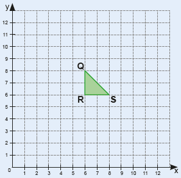As novas coordenadas dos vértices do triângulo QRS serão: Q(6, 8), R(6, 6), S(8, 6). Esta é outra forma de realizar uma redução.
No plano cartesiano abaixo temos o triângulo de vértices M(6, 12), N(6, 6) e O(12, 6).
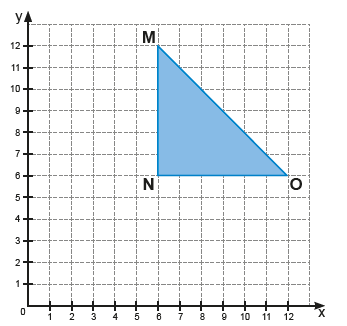Vamos reduzi-lo dividindo todas as suas coordenadas por 3. Dessa forma, teremos um novo triângulo QRS de coordenadas Q(2, 4), R(2, 2) e S(4, 2).
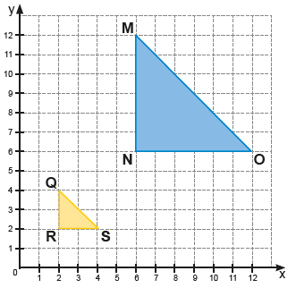ENCONTRE SOLUÇÕES
1. Observe os desenhos 1 e 2 na malha quadriculada abaixo. Podemos afirmar que o desenho 2 é uma ampliação do desenho 1? Justifique sua resposta.
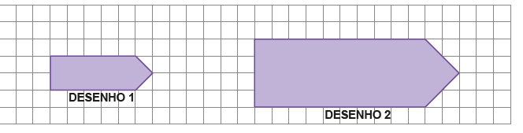Sim, pois todos os seus comprimentos foram multiplicadas por 2.
UNIDADE 3 - CAPÍTULO 6
125
125
Atividade 2
Apresentamos a seguir uma possibilidade de redução, dividindo-se as medidas de comprimento de todos os lados por 3.
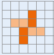Atividade 3
Apresentamos a seguir uma possibilidade de resposta, onde as coordenadas foram multiplicadas por 2, surgindo o novo polígono EFGH de coordenadas E(8, 8); F(12, 6), G(8, 4) e H(4, 6).
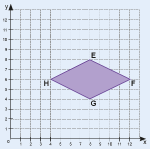Atividade 5
Apresentamos a seguir uma possibilidade de resposta, onde as coordenadas foram divididas por 3, surgindo o novo polígono MNOPQRST de coordenadas M(2, 4), N(4, 4), O(4, 3), P(3, 3), Q(3, 2), R(4, 2), S(4, 1) e T(2, 1).
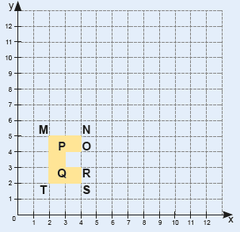2. Em uma malha quadriculada, faça a redução da figura abaixo e, em seu caderno, justifique como realizou a redução. Resposta pessoal.
![Uma malha quadriculada com o desenho de uma figura formada por quatro retângulos, ocupando cada um, 18 quadrados. São dois retângulos, à esquerda, e mais dois, à direita. Os da esquerda formam o número sete com um retângulo na horizontal na cor laranja clara e o outro laranja escuro na vertical. Os retângulos da esquerda formam a letra L com um retângulo na vertical laranja escuro e o outro na horizontal laranja claro. Os retângulos da esquerda estão localizados três andares acima dos retângulos da direita.](../../resources/images/malha.PNG)
3. Em um papel quadriculado, construa um plano cartesiano e faça a ampliação do polígono ABCD abaixo. Escreva em seu caderno as coordenadas do polígono ABCD e do polígono ampliado, justificando a sua resposta. A(4, 4); B(6, 3), C(4, 2) e D(2, 3). Resposta pessoal.
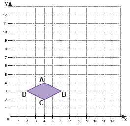4. Considere um polígono de coordenadas M(14, 8), N(10, 6) e O(8, 10). Podemos afirmar que um polígono de coordenadas A(7, 4), B(5, 3) e C(2, 5) é uma redução do polígono MNO? Justifique a sua resposta. Não, pois as coordenadas não foram divididas por um mesmo número maior que 1.
5. Em um papel quadriculado, construa um plano cartesiano e faça a redução do polígono ABCDEFGH. Escreva em seu caderno as coordenadas do polígono abaixo e do polígono reduzido, justificando a sua resposta. A(6, 12); B(12, 12), C(12, 9), D(9, 9), E(9, 6), F(12, 6), G(12, 3), H(6, 3). Resposta pessoal.
![Figura de um plano cartesiano. Ele possui dois eixos: o x, na horizontal, e o y, na vertical. O eixo x é dividido em 12 partes e o y também em 12 partes. No plano cartesiano o desenho de um polígono amarelo no formato da letra C, a partir da união das coordenadas: A, B, C, D, E, F, G, H. A letra A está no ponto 6 do eixo x e 12 do eixo y. A letra B está no 12 do x e 12 do y. A letra C, 12 do x e 9 do y. A letra D, 9 do x e 8 do y. A letra E, 9 do x, 6, do y. A letra F, 12 do x e 6 do y. A letra G, 12 do x e 3 do y. A letra H, 6 do x e 3 do y.](../../resources/images/hbag.PNG)
UNIDADE 3 - CAPÍTULO 6
126
126
As atividades desta seção têm por objetivo a interação dos alunos, para que trabalhem em duplas e respondam às questões propostas. Além disso, que realizem uma pesquisa a respeito de práticas saudáveis, ou não, respeitando as opiniões dos colegas, conforme previsto na Competência específica de Matemática 8 e as Competências gerais 7 e 8 da BNCC.
EF06MA32
PROBABILIDADE E ESTATÍSTICA
► Educação no trânsito
https://www.saude.mg.gov.br/vidanotransito
Respeito e responsabilidade: pratique no trânsito
[…]
Para a OMS os Acidentes de Transporte Terrestre constituem grave problema mundial decorrente do impacto na morbimortalidade, particu-larmente na população mais jovem e predominantemente do sexo mas-culino. Esses acidentes exercem forte impacto sobre os serviços de saúde, pelas altas demandas principalmente nos serviços públicos de emergên-cia, de assistência especializada, de reabilitação física, psicológica e de assistência social, bem como para a sociedade em geral.
[…]
MINAS GERAIS. Secretaria de Estado de Saúde. Respeito e responsabilidade: pratique no trânsito. Disponível em: https://www.saude.mg.gov.br/vidanotransito. Acesso em: 14 mar. 2022.
Observe a seguir alguns gráficos que trazem informações que demons-tram o total de internações por causas externas no estado de Minas Gerais.
Gráfico A - Distribuição das internações hospitalares no SUS Geral, segundo categoria. Minas Gerais, 2010 a 2021*.
![Gráfico de barras verticais com o título “Distribuição das internações hospitalares no SUS Geral, segundo categorias. Minas Gerais, 2010 a 2021”. O gráfico é composto por dois eixos: um à esquerda com o título “Quantidade de internações”. O eixo é vertical e está numerada desde a base pelos números: 0, 20 mil, 40 mil, 60 mil, 80 mil, 100 mil, 120 mil. O segundo eixo está na horizontal, na base do gráfico com o título “Meios de Transporte”. São cinco pares de barras verticais nas cores azul e laranja. Azul representa os homens e Laranja, as mulheres. No primeiro par, nomeado de “a pé”, 32 mil 779 são homens e 16 mil 171 mulheres. O segundo par é “Bicicleta”, sendo 17 mil 249 homens, e 3 mil 432 mulheres. O terceiro par é ”motocicleta”, 99 mil 554 homens e 16 mil 990 mulheres. O quarto par é “automóvel”, 2 ml e sete homens e 8 mil 276 mulheres. O quinto par é “outros”, sendo 18 mil 647 homens e 5 mil 133 mulheres. No canto inferior esquerdo: Fonte: Ministério da Saúde – Sistema de informações hospitalares do SUS (SIH/SUS). *Dados retirados em 24 de maio de 2021.](../../resources/images/intema.PNG)
Fonte: Ministério da Saúde - Sistema de informações hospitalares do SUS (SIH/SUS).
*Dados retirados em 26/04/2021.
1. Converse com um colega e, em seus cadernos, escrevam um texto rela-tando as informações que aparecem no gráfico A. Os alunos poderão comparar as quantidades de internações oriundas de acordo com as categorias e observar qual categoria e gênero representa a maior quantidade de acidentes.

UNIDADE 3 - CAPÍTULO 6
127
127
EF07MA21

2. Converse com um colega e, em seus cadernos, escrevam um texto relatando as informações que aparecem no gráfico B.
Gráfico B - Distribuição das internações hospitalares no SUS Geral Acidentes de Transporte Terrestre, segundo faixa etária.
Minas Gerais, 2010 a 2021*.
![Gráfico de barras verticais com o título “Gráfico B – Distribuição das internações hospitalares no SUS Geral Acidentes de Transporte Terrestre, segundo faixa etária. Minas Gerais, 2010 a 2021*.” O gráfico é composto por dois eixos: um à esquerda com o título “Quantidade de internações”. O eixo é vertical e está numerada desde a base pelos números: zero, 10 mil, 20 mil, 30 mil, 40 mil, 50 mil, 60 mil, 70 mil, 80 mil. O segundo eixo está na horizontal, na base do gráfico com o título “Faixa Etária”. São 12 barras verticais verdes: “Menor de um ano” corresponde a 407 internações. “1 a 4 anos” 2.562. “5 a 9 anos” 5.635. “10 a 14 anos” 8.571. “15 a 19 anos” 24.465. “20 a 29 anos” 67.279. “30 a 39 anos” 48.344. “40 a 49 anos” 35.483. “50 a 59 anos” 24.166. “60 a 69 anos” 12.434. “70 a 79 anos” 6.543. “80 anos ou mais” 3.349. No canto inferior esquerdo: Fonte: Ministério da Saúde – Sistema de informações hospitalares do SUS (SIH/SUS). *Dados retirados em 24 de maio de 2021.](../../resources/images/intema2.PNG) Os alunos poderão comparar as quantidades de internações oriundas
de acordo com a faixa etária.
Os alunos poderão comparar as quantidades de internações oriundas
de acordo com a faixa etária.
Faixa etária
Fonte: Ministério da Saúde - Sistema de informações hospitalares do SUS (SIH/SUS).
*Dados retirados em 26/04/2021.
3. Troque ideias com seu colega, façam uma pesquisa e escrevam suges-tões de práticas saudáveis no trânsito para pedestres, passageiros, ciclistas, motociclistas e motoristas. Respostas pessoais.
RELEMBRE
1. Nas situações a seguir, escreva, em seu caderno, se elas nos dão ideia de ponto, reta ou plano.
a) Um grão de areia. Ponto.
b) A superfície do mar calmo. Ponto.
c) O horizonte. Reta.
2. Observe as retas a seguir. Quais retas são paralelas? Quais retas são concorrentes?
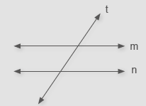 As retas m e n são paralelas, as retas t e m e as retas t e n são concorrentes.3. Leia as afirmações a seguir e escreva, em seu caderno, V para as afirmações verdadeiras e F para as falsas, corrigindo as que forem falsas.
a) Um ângulo agudo mede 90º. Falsa. Um ângulo agudo mede menos de 90°.
b) Um ângulo é formado por semirretas. Verdadeira.
c) Um ângulo pleno é um ângulo que mede 180º. Verdadeira. Falsa. Um ângulo pleno mede 360°
d) O instrumento utilizado para medir um ângulo é o esquadro. Falsa. O instrumento utilizado para medir o ângulo é o transferidor
e) Um ângulo obtuso é um ângulo que mede mais que 90° e menos que 180º. Verdadeira.
f) Um ângulo raso mede o dobro da medida de um ângulo reto. Verdadeira.
UNIDADE 3 - CAPÍTULO 6
128
Algumas práticas saudáveis no trânsito
Pedestre: atravesse a via sempre olhando para os dois lados; não utilize equipamentos que retirem sua atenção, como fones de ouvidos ou celular; atravesse a via utilizando as faixas de segurança ou a passarela. Respeite as placas, os sinais e as regras gerais de trânsito, a fim de promover uma cultura de segurança.
Passageiro: use, obrigatoriamente, o cinto de segurança em qualquer situação e distância; menores de 10 anos devem ser transportados no banco traseiro com o cinto de segurança; menores de 4 anos devem ser transportados no banco traseiro e em cadeira especial; menores de 1 ano devem ser transportados no banco traseiro e em assento próprio.
Ciclista: trafegue nas ciclovias e ciclofaixas. Onde elas não existirem, ande próximo ao meio-fio; trafegue sempre no mesmo sentido dos veículos; lembre-se sempre que capacete, joelheiras, cotoveleiras e luvas reduzem o impacto e o risco de ferimentos graves; nunca pegue carona na traseira de veículos.
Motociclista: use sempre o capacete e exija que seu carona também use; utilize sempre capacete fechado e que tenha o selo do INMETRO; não pilote depois de ingerir qualquer bebida alcoólica; não utilize equipamentos que retirem sua atenção, como fones de ouvidos ou celular; utilize luzes de circulação diurna.
128
Atividade 4
A: Triângulo isósceles e acutângulo. B: Triângulo isósceles e retângulo. C: Triângulo equilátero e acutângulo. D: Triângulo escaleno e retângulo. E: Triângulo escaleno e obtusângulo.
Atividade 5
A: Retângulo.
B: Trapézio isósceles.
C: Paralelogramo.
D: Trapézio retângulo.
F: Losango.
E: Quadrado.
Atividade 6
7 quadrados congruentes.
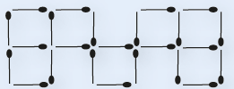8 quadrados congruentes.
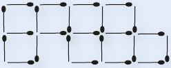Atividade 7
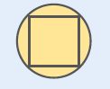Atividade 9
EF07MA21
RELEMBRE
4. Observe os triângulos na malha quadriculada a seguir. Em seu caderno, classifique cada um deles de acordo com a medida de seus lados e de seus ângulos.
![Na malha quadriculada, cinco triângulos nomeados de A, B, C, D, E. O triângulo da letra A é amarelo. Ele ocupa na base 3 quadrados e nas laterais em diagonal passam por três quadrados. O triângulo B é verde. Ele ocupa na base 3 quadrados, a lateral esquerda diagonal passa por três quadrados. A lateral direita é uma linha na vertical no tamanho de três quadrados. O triângulo C é branco. Ele ocupa na base 4 quadrados e nas laterais em diagonal tem a altura de três quadrados. O triângulo D é azul. Ele ocupa na base quatro quadrados. A lateral esquerda é uma linha vertical com a altura de dois andares. A lateral direita liga-se à esquerda em diagonal. O triângulo E tem na base o tamanho de três quadrados. A lateral esquerda é uma diagonal e passa por dois quadrados em direção à esquerda da malha. A lateral direita também é uma diagonal voltada para a esquerda.](../../resources/images/r1.PNG)
5. Na malha quadriculada a seguir foram representados alguns quadriláteros. Em seu caderno, escreva o nome de cada um deles.
![Na malha quadriculada, seis quadriláteros, nomeados de A, B, C, D, E, F. O quadrilátero da letra A é branco. Ele ocupa na base e na parte superior três quadrados. As laterais têm a altura de dois quadrados. O B é laranja tem na base o tamanho de 3 quadrados. A parte superior é menor que a base. As laterais se ligam da base a parte superior em diagonais. O C, em azul, tem a forma de um quadrado inclinado à direita. O D, em branco, tem a base maior que a parte de cima. A lateral esquerda é uma linha na vertical. A lateral direita é uma diagonal inclinada para a esquerda. O E, em amarelo, é a união de dois triângulos: um em cima e o outro embaixo. O de cima tem o vértice para cima e o de baixo o vértice para baixo. O F, em verde, tem quatro lados iguais, cada um ocupando dois quadrados.](../../resources/images/r2.PNG)
6. Utilizando 24 palitos de fósforo Marcos construiu 6 quadrados congruentes como mostra a figura.
► Agora é a sua vez! Utilizando a mesma quantidade de palitos, em dupla, construam uma figura com 7 quadrados congruentes e depois outra com 8 quadrados congruentes.
7. Desenhe, em seu caderno, a próxima figura desta sequência.
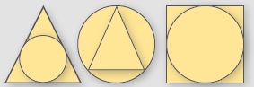8. (Saresp) Observe a tabela abaixo e veja como ela foi organizada. O espaço destinado a figuras quadrangulares vermelhas é: II
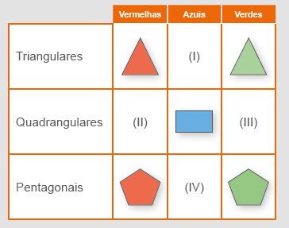a) I
b) X II
c) III
d) IV
9. Agora vamos montar um quadrado utilizando 4 peças iguais a esta.
► Nos anexos você encontrará as peças que precisa para montar o quadrado. Reproduza-as e divirta-se.
UNIDADE 3 - CAPÍTULO 6
129
Motorista: transite em velocidade condizente com a velocidade permitida na via em que está trafegando; mantenha distância segura de, pelo menos, 10 metros de distância do carro da frente, principalmente em caso de chuva; utilize luzes diárias de circulação diurna; respeite a faixa de pedestre; use sempre o cinto de segurança; não utilize equipamentos que retirem sua atenção, como fones de ouvidos ou celular; não pilote depois de ingerir qualquer bebida alcoólica. A importância do uso do cinto de segurança
No caso de uma frenagem brusca, capotagem ou impacto frontal devido a uma colisão, o cinto de segurança protege e mantém o corpo do condutor e dos demais ocupantes no assento.
Se beber, já sabe: não dirija!
O consumo de álcool, mesmo em quantidades relativamente pequenas, aumenta o risco de envolvimento em acidentes, tanto para condutores como para pedestres. Além de provocar a deterioração de funções indispensáveis à segurança ao volante, como a visão e os reflexos, o álcool diminui também a capacidade de discernimento, estando em geral associado a outros comportamentos de alto risco, como excesso de velocidade e inobservância do uso de cinto de segurança.
[…]
129
Atividade 10
Após os alunos escreverem as coordenadas dos pontos indicados no plano cartesiano, aproveite a representação dos pontos no plano e proponha as seguintes questões no caderno:
a) Unindo os pontos A, B, C e G qual polígono é possível formar? Quadrilátero.
b) Podemos afirmar que é possível traçar uma única reta passando pelos pontos B, C e F? Sim.
c) Podemos traçar uma única reta passando pelos pontos A, B e E? Não.
d) Unindo os pontos A, B e C podemos traçar um triângulo retângulo? Não. Será um triângulo acutângulo.
Atividade 12
Aproveite este momento para conversar sobre a importância de se respeitar a sinalização de trânsito. É muito importante que o código de trânsito seja respeitado para que os acidentes sejam evitados.
Solicite aos alunos que pesquisem o significado de outras placas de trânsito que consideram importantes para que os acidentes sejam evitados.
EF07MA21
10. Escreva em seu caderno as coordenadas dos pontos indicados no plano cartesiano.
A (4, 11), B (9, 8), C (6, 5), D (9, 0), E (12, 2), F (3, 3), G (0, 7). 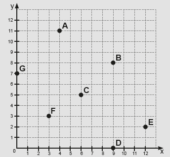 Sim, pois todas as medidas dos comprimentos da fi gura I foram divididas por 2.11. Na malha quadriculada temos desenhadas as figuras I e II. Podemos afirmar que a figura II é uma redução da figura I? Justifique sua resposta.
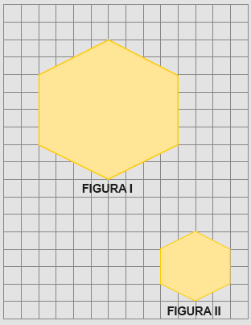12. Você sabe o que é sinalização de trânsito?
O Código de Trânsito Brasileiro define sinalização de trânsito como sendo um conjunto de sinais de trânsito e dispositivos de segurança colocados na via pública com o objetivo de garantir sua utilização adequada, possibilitando melhor fluidez no trânsito e maior segurança dos veículos e pedestres que nela circulam.
a) Em sua opinião, a sinalização no trânsito é respeitada? Resposta pessoal
b) O que poderia ser feito para evitar que ocorram tantos acidentes de trânsito no Brasil? Resposta pessoal.
c) A seguir, temos representadas algumas placas de trânsito que nos
lembram alguns polígonos. Escreva, em seu caderno, o que significa
cada placa e o nome do polígono que cada uma delas nos lembra.
Parada obrigatória - octógono.
Pesca esportiva - quadrilátero.
Terminal rodoviário - quadrilátero.
Preferencial - triângulo.
![Quatro placas duas em cima e duas abaixo. A primeira em cima e à esquerda tem seis lados iguais e a cor é vermelha. No centro dela em branco: Pare. A segunda placa à direita tem a cor bordô. No centro dela o desenho de uma pessoa pescando em um rio. Abaixo do desenho: Pesca Esportiva. Abaixo à esquerda, uma placa bordô. No centro o desenho de um ônibus. Abaixo de desenho: Terminal Rodoviário. A quarta placa à esquerda e abaixo tem a forma de um triângulo com o vértice apontado para baixo. Ele tem uma borda grossa vermelha e o centro é um triângulo invertido na cor branca.](../../resources/images/r8.PNG)
UNIDADE 3 - CAPÍTULO 6
130
130
Atividade 13
Aproveite os mosaicos mostrados nesta atividade para resgatar as formas geométricas estudadas. No mosaico da letra a é possível identificar triângulos, quadriláteros e hexágonos. Na letra b temos triângulos e quadriláteros. A letra c é formada somente por quadriláteros e na letra d temos quadriláteros, pentágonos e hexágonos.
EF07MA21
13. (Saresp) Dentre os mosaicos abaixo, aquele que é formado somente por quadriláteros é:
a)
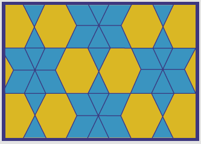b)
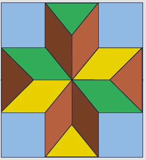c) X
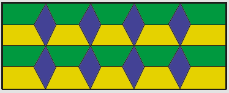d)
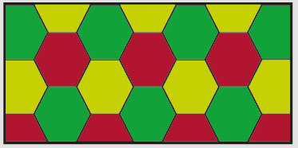UNIDADE 3 - CAPÍTULO 6
131
131